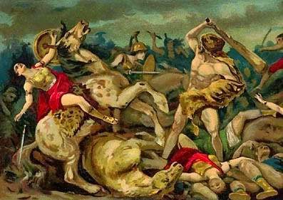

Eurysthée bây giờ thật lúng túng. Tám cuộc thử sức thử tài rồi mà cuộc nào Héraclès cũng hoàn thành thắng lợi, chẳng cuộc nào chịu bó tay. Gã bóp óc suy nghĩ hồi lâu mà chưa tìm ra một công việc gì giao cho Héraclès. Đang lúc nghĩ chưa ra đó thì Admete con gái gã, một cô đồng thờ phụng nữ thần Héra, đến xin cha giao cho Héraclès sang xứ sở của nữ hoàng Hippolyte người cai quản các nữ chiến binh Amazones, đoạt chiếc thắt lưng của nữ hoàng đem về cho mình. Những nữ chiến binh Amazones là con gái của thần Chiến tranh-Arès. Vị thần này đã trao cho Hippolyte, nữ hoàng của những Amazones, một chiếc thắt lưng, một chiếc đai hết sức đẹp đẽ và quý giá. Đây không phải là một chiếc đai do bàn tay người trần tục đoản mệnh làm ra mà do bàn tay của thần Thợ rèn-Héphaïstos sáng tạo. Thần Chiến tranh-Arès đã nhờ vị thần Thợ rèn Chân thọt làm ra chiếc đai này để biểu hiện quyền lực tượng trưng của nữ hoàng.
Héraclès lên đường vượt biển cùng với một số bạn bè, trong đó có người anh hùng Thésée của đất Attique. Chàng đã từng nghe nhiều về tài chinh chiến của những người Amazones nên không dám coi thường, phải có một đội ngũ đông đảo trong đó có những vị tướng tài thì mới hy vọng hoàn tất công việc. Hành trình sang đất nước của nữ hoàng Hippolyte phải vượt qua biển Égée để đi vào biển Pont-Euxin rồi mới đổ bộ lên được Tiểu Á để tiến vào kinh thành của họ ở gần Caucase, kinh thành nổi tiếng, bên bờ sông Thermodon tên gọi Thémiscyre.
Héraclès cho thuyền ghé lại đảo Paros, nơi những người con trai của nhà vua Minos được giao quyền cai quản, không may xảy ra một chuyện va chạm nhỏ với người dân trên đảo. Thế là dân Paros xúm lại đánh chết hai người bạn đường của Héraclès. Tức giận vô cùng về hành động ngang ngược, Héraclès trả đũa, ra lệnh cho anh em vây đánh. Dân Paros bị giết, bị bắt khá nhiều. Những người con trai của Minos lúc bấy giờ mới cử người ra hầu tòa. Héraclès ra điều kiện, đòi họ phải đền hai người để cho chàng khỏi thiếu hụt quân số thì chàng mới ra lệnh giải vây. Bên Paros ưng thuận, trao cho chàng hai người cháu của nhà vua Minos là: Alcée và Sthénélos.
Thuyền của Héraclès rời đảo Paros đi đến xứ Mysie. Mọi người lên bờ tới thăm nhà vua Lycos trị vì những người Mariandynes. Nhà vua tiếp đãi những người khách từ phương xa tới với tấm lòng chân thành và nồng hậu. Giữa buổi tiệc vui thì có tin cấp báo: những người Bébryces kéo sang xâm lấn bờ cõi. Quân giặc đã đột nhập và vượt qua biên thùy. Héraclès không thể làm ngơ trước tình hình ấy. Chàng ra lệnh cho mọi người lên đường cứu khốn phò nguy. Đội quân dưới quyền chỉ huy của Héraclès chẳng mấy chốc đã phá tan giặc Bébryces. Thừa thắng, Héraclès truy đuổi quân giặc đến tận kinh thành, thu phục toàn bộ vương quốc của người Bébryces trao cho nhà vua Lycos cai quản. Cảm động trước cử chỉ hào hiệp của Héraclès, nhà vua cho xây dựng một đô thành mang tên là Héraclès để ghi nhớ công ơn của người anh hùng. Từ giã vua Lycos ra đi, lần này đoàn quân của Héraclès đi thẳng một mạch tới vương quốc của nữ hoàng Hippolyte.
Đã từng nghe nói nhiều về chiến công của người anh hùng Héraclès, con của thần Zeus, với tấm lòng khâm phục, cho nên khi nghe tin có đoàn thuyền của Héraclès tới xứ sở của mình, lập tức nữ hoàng Hippolyte tổ chức một cuộc nghênh tiếp rất trọng thể ở ngay ngoài bãi biển. Héraclès dẫn đầu đoàn tướng lĩnh của mình lên bờ. Nhìn phong thái uy nghi của chàng, nữ hoàng Hippolyte và những chiến binh Amazones ai nấy đều cảm phục và cho rằng hẳn đây là một vị thần giáng thế chứ không phải là một người thường. Hai bên trao đổi những tặng phẩm bày tỏ sự hòa hiếu và tôn trọng. Nữ hoàng Hippolyte cất tiếng hỏi:
- Hỡi Héraclès, người con trai của đấng phụ vương Zeus mà những chiến công vĩ đại của chàng đã vang lừng bốn cõi! Các vị đã đến đất nước của chúng tôi, đất nước của những người nữ chiến binh Amazones dưới quyền trị vì của nữ hoàng Hippolyte mà danh tiếng đã bay đến tận trời xanh! Xin các vị cho biết, các vị đến đây với tấm lòng quý người mến cảnh hay các người đến đây với vũ khí đồng thèm khát máu người? Các vị sẽ đem lại cho đất nước này những bữa tiệc tưng bừng hay các vị đem lại sự chém giết và chết chóc tai ương?
Héraclès đáp lại:
- Hỡi nữ hoàng kính mến, người chỉ huy các đạo quân Amazones có một không hai trên mặt đất này, đạo quân của những người phụ nữ khước từ mọi hạnh phúc gia đình và chỉ tìm thấy nguồn vui trong sự nghiệp chinh chiến! Ta và các bạn hữu ta vượt qua bao biển xa muôn dặm với những lớp sóng hung dữ màu đỏ tím rượu vang đến đây vì một việc không phải do trái tim ta bảo ta. Eurysthée, nhà vua của đô thành Mycènes đầy vàng bạc, người được nữ thần Héra vĩ đại, vợ của thần Zeus, sùng ái và bảo hộ, sai ta đến đây để xin nàng chiếc đai xinh đẹp và quý giá mà thần Chiến tranh-Arès đã ban tặng cho nữ hoàng. Eurysthée sở dĩ sai ta là vì con gái của nhà vua là nàng Admete muốn có chiếc đai đó. Xin nữ hoàng hãy vì thần Zeus và các vị thần của đỉnh Olympe cao ngất bốn mùa mây phủ, ban cho ta tặng vật đó bởi vì ta không thể trở về đất Hy Lạp một khi chưa có trên tay chiếc đai quý giá, bởi vì Héraclès này chưa từng chịu bó tay thất bại trước một sứ mạng nào của Eurysthée trao cho để thử thách người con của thần Zeus vĩ đại!
Nghe Héraclès nói, nữ hoàng Hippolyte trong trái tim bỗng thấy yêu mến người anh hùng. Nàng muốn trao cho Héraclès chiếc đai quý giá của nàng. Nhưng nữ thần Héra vĩ đại đã đoán biết được mọi ý nghĩ trong trái tim nàng. Nữ thần bèn biến mình thành một nữ chiến binh Amazones đi khắp các hàng quân xúi giục: “Này chẳng phải người dũng sĩ ấy đến đây là để xin chiếc đai quý giá ấy đâu. Hắn muốn bắt vị nữ hoàng kính yêu và tài giỏi của chúng ta về làm nô lệ đấy. Chúng ta phải bảo vệ nữ hoàng đừng mắc lừa bọn chúng”.
Nghe những lời xúi giục như thế, những nữ chiến binh Amazones bèn cầm vũ khí. Một nữ tướng Amazones tên là Aella đứng lên kêu gọi mọi người hãy đánh đuổi ngay lũ người xa lạ thâm độc này ra khỏi đất nước. Thế là cuộc xung đột nổ ra, vì nữ thần Héra muốn cho người con trai riêng của chồng mình phải chết để Eurysthée vĩnh viễn được làm vua, cai quản đất Argolide. Nữ tướng Aella hung hăng, xông vào trước nhất. Đánh nhau với Héraclès chưa được bao lâu nàng đã đuối sức bỏ chạy, Héraclès đuổi theo, vung gươm kết liễu cuộc đời vị nữ tướng này. Nữ tướng Prothoé ghê gớm hơn, một mình, chỉ một mình nàng, nàng đã hạ bảy dũng sĩ trong số những bạn chiến đấu của Héraclès. Nhưng nàng cũng không thoát khỏi sự trả thù trừng phạt của người anh hùng. Một mũi tên của Héraclès bay đến xuyên qua ngực nàng, khiến cho nàng ngã nhào từ trên lưng con chiến mã yêu quý xuống. Lập tức bảy nữ tướng khác xông vào đánh trả thù. Những Amazones này là tùy tướng của nữ thần Artémis. Tài phóng lao của họ chẳng ai sánh kịp. Họ dùng khiên che chắn những mũi tên ác hiểm của Héraclès rất có hiệu quả, tiếp đó họ phóng liên tiếp những mũi lao đồng nhọn hoắt về phía Héraclès. Nhưng không một mũi lao nào trúng người chàng cả. Chúng, hoặc cắm phập ngay trước mặt chàng hoặc lướt ngang qua trước mặt chàng; khi thì chệch sang trái, khi thì chệch sang phải. Có mũi lao ác hiểm hơn lao thẳng vào người chàng thì may thay chàng kịp thời nhảy ra xa tránh được. Biết không thể dùng tên để chiến thắng những Amazones này, Héraclès nhảy bổ tới dùng chùy. Và lần lượt bảy nữ tướng Amazones phải về vương quốc của thần Hadès. Người anh hùng vĩ đại, con của Zeus, tiếp tục tấn công. Nữ tướng kiệt xuất Mélanippe163 em của nữ hoàng Hippolyte bị chàng bắt sống cùng với một tùy tướng là nàng Antiope. Núng thế, những người Amazones phải cầu hòa. Họ bằng lòng trao cho Héraclès chiếc thắt lưng quý giá của nữ hoàng Hippolyte với điều kiện Héraclès trao lại cho họ nữ tướng Mélanippe. Cuộc dàn xếp kết thúc nhanh chóng. Những người chiến thắng xuống thuyền lên đường trở về quê hương Hy Lạp. Để khen thưởng cho những chiến công oanh liệt của tùy tướng Thésée, người anh hùng của đất Attique mà sau này chiến công lừng lẫy khắp đất nước Hy Lạp, Héraclès trao nữ tướng Amazones Antiope cho chàng.

Trên đường từ xứ sở của những người Amazones trở về quê hương Hy Lạp, Héraclès cùng với các chiến hữu ghé vào thành Troie. Thuyền cập bến, mọi người đổ lên bờ. Một cảnh tượng rất đỗi thương tâm đang diễn ra trước mắt họ. Một người con gái xinh đẹp bị xích vào một mỏm đá sát bờ biển. Đó là nàng Hésione, con gái vua Laomédon, người đang trị vì trên vùng đồng bằng Troade phì nhiêu với đô thành Troie nức tiếng giàu có. Hỏi ra thì Héraclès được những người Troie kể cho biết nguyên do như sau:
Xưa kia khi Laomédon được vua cha là Ilos truyền cho ngôi báu trị vì thành Troie đã phạm một tội lớn khiến các vị nữ thần không thể tha thứ được. Thuở ấy thành Troie chưa được xây dựng hùng vĩ và đẹp đẽ như ngày nay. Laomédon việc đầu tiên khi lên ngôi là cho xây dựng ngay một đô thành hùng vĩ kiên cố đủ sức trấn giữ với mọi cuộc tiến công cướp bóc của các nước láng giềng thường nhòm ngó, thèm khát kho vàng của thành Troie. Công cuộc xây dựng thành không phải dễ dàng. Nhà vua phải cầu xin các vị thần giúp đỡ. Thần Đại dương-Poséidon và thần Ánh sáng-Apollon nhận lời với điều kiện: Laomédon phải trả công cho hai thần tất cả số súc vật do đàn súc vật của nhà vua sinh đẻ ra trong năm ấy, Laomédon ưng thuận. Hai vị thần bắt tay vào công việc. Họ xây cho nhà vua những bức tường thành cao ngất và kiên cố. Họ xây cho nhà vua cả một bến cảng đàng hoàng để cho thuyền bè qua lại có thể neo đậu an toàn và thuận lợi. Họ lại còn làm hơn thế nữa: xây cả một con đê rộng và dài để che chở cho bến cảng khỏi những cơn sóng hung dữ. Các vị thần đã làm việc tận tụy đêm ngày vì thế chẳng bao lâu Laomédon đã có một thành trì to đẹp và vững chắc. Nhưng đến khi hai vị thần xin vua trả công như đã cam kết thì nhà vua lại vỗ tuột. Các vị thần cãi lại, chẳng cam chịu để Laomédon cướp không công sức thì nhà vua lại hầm hầm tức giận, dọa rằng nếu cứ lằng nhằng, mè nheo mãi cái chuyện đòi công xá nữa thì sẽ bị xẻo tai, cắt mũi. Ức quá, hai vị thần đành ra về và sẽ tính chuyện sòng phẳng với Laomédon sau này. Và ngày ấy chẳng phải lâu la gì, tuy chúng ta chẳng rõ sau khi các vị thần ra về được mấy tuần trăng hay mấy mùa lúa. Đòn trừng phạt đầu tiên là thần Apollon gieo bệnh dịch xuống đời sống nhân dành thành Troie. Người chết không biết bao nhiêu mà kể, chẳng thuốc men gì chữa chạy nổi cả. Đòn thứ hai là của thần Poséidon. Thần sai một loài thủy quái ở tận đáy sâu của biển đội nước bơi lên xông vào vùng đồng bằng Troade phá sạch nhà cửa ruộng vườn. Thần lại còn dùng cây đinh ba ghê gớm khều những con sóng của Đại dương lên để cho nước cứ ngun ngút bốc cao như một ngọn núi rồi đổ ầm ầm xuống xứ sở của Laomédon. Chẳng còn cách gì cứu được, Laomédon phải đích thân đến đền thờ cầu khấn các vị thần ban cho cách giải trừ tai họa. Lời sấm phán truyền rằng chỉ có cách đem hiến dâng công chúa Hésione cho thần Poséidon thì mới làm nguôi được cơn giận của vị thần Lay chuyển Mặt đất. Vì sự thể, sự tình như vậy nên mới có cảnh tượng xiềng Hésione vào một mỏm đá sát bờ biển. Và chỉ chốc lát nữa con quái vật ghê tởm kia từ dưới biển chui lên sẽ lao vào ngoạm lấy Hésione và đưa nàng xuống dưới thủy cung.
Nghe thuật lại đầu đuôi câu chuyện, Héraclès thấy không thể bỏ qua việc này. Chàng phải ra tay diệt trừ loài thủy quái để cứu sống người thiếu nữ xinh đẹp, con của Laomédon. Chàng bày tỏ ý nguyện của mình với nhà vua song kèm theo một điều kiện: nếu chàng hoàn thành được sứ mạng vẻ vang đó thì nhà vua phải đền bù công lao của chàng bằng... không phải bằng nàng Hésione như xưa kia vua Céphée đền bù Andromède cho Persée, mà bằng đôi thần mã trắng phau như tuyết, phóng nhanh như gió, nhẹ nhàng đến nỗi chẳng ai nghe thấy tiếng vó của chúng. Đây là đôi thần mã bất tử, nghe được cả tiếng người, vốn là báu vật riêng của thần Zeus. Thần Zeus đã trao lại cho nhà vua Tros, ông của Laomédon, để đền bù việc thần bắt của nhà vua người con trai xinh đẹp tên là Ganymède. Thuở ấy, thần Zeus không hiểu vì sao đem lòng mê cảm người con trai của nhà vua Tros đến nỗi quên ăn quên ngủ. Chẳng kìm hãm được dục vọng, thần bèn biến mình thành một con đại bàng to lớn từ trời cao bay sà xuống cắp ngay chàng Ganymède xinh đẹp đưa về cung điện Olympe. Ganymède được trở thành bất tử, sống bên cạnh các vị thần để dâng rượu thánh và thức ăn thần trong những bữa tiệc linh đình của thế giới Olympe. Còn Tros thì được đôi thần mã bất tử, báu vật của thần Zeus dồn mây mù, giáng sấm sét. Trải qua thời Tros đến Ilos và bây giờ đến Laomédon, đôi thần mã vẫn là một báu vật mà nhiều vị anh hùng khát khao thèm muốn.
Với điều kiện mà Héraclès nêu ra, Laomédon thấy chấp nhận được. Tưởng đòi chia vàng bạc châu báu hay giang sơn, đất nước gì, chứ đôi thần mã, đôi ngựa thì... được thôi. Thế là Héraclès bắt tay vào việc. Chàng ra lệnh cho quân Troie đắp ngay cho chàng một bức lũy trên bờ biển. Chàng sẽ nấp sau bức lũy này chờ quái vật từ dưới biển hiện lên. Chẳng phải chờ đợi lâu la gì, con vật như một hòn núi đá từ dưới đáy biển sâu nhô dần lên và há hốc cái miệng đen ngòm lao vào Hésione. Héraclès hét lên một tiếng rồi chàng vung thanh gươm dài và cong của thần Hermès lao thẳng tới quái vật. Chàng chém mạnh vào đầu nó một nhát như sét đánh, sau đó vung gươm chém liên tiếp vào cổ nó. Bị đánh bất ngờ những đòn ác hiểm, quái vật không kịp đối phó và chỉ đến nhát thứ ba hay thứ tư gì đó thì nó đã đuối sức. Héraclès cứu được Hésione.
Song tồi tệ hết chỗ nói là, đến khi Héraclès đòi Laomédon trao cho mình đôi thần mã thì Laomédon lại ngựa quen đường cũ, vỗ tuột. Nhà vua lại tiếc đôi thần mã nên giở trò lá mặt lá trái với người anh hùng. Nhưng lúc này đây người anh hùng của chúng ta không thể trừng phạt tên vua xấu xa đó ngay được vì số bạn chiến đấu còn quá ít mà quân Troie lại đông và thiện chiến. Hơn nữa, Héraclès còn phải trở về Mycènes để dâng chiếc thắt lưng của Hippolyte cho Eurysthée.